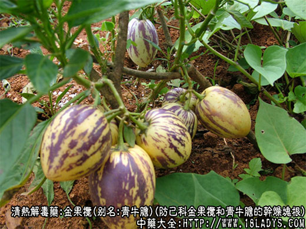
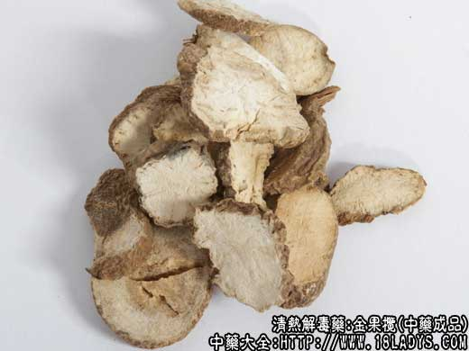
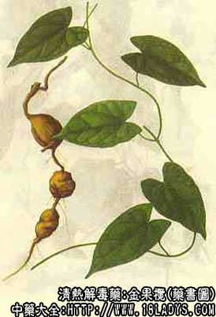

金果榄为少常用中药，初载《百草镜》。
别名：青牛胆、金牛胆（江西，地苦胆）。
来源：为防己科多年缠绕藤本金果榄和青牛胆的干燥块根。
产地：主产于湖南、江西、贵州、广西、湖北、四川等省。
性状鉴别：块根呈不规则的球形或块状，大小不一。长约3～10厘米，直径1.5～5厘米。表面绿黄褐色，皱缩，凹凸不平。有细根痕1～2个。质坚实，不易折断。断面蛋黄白色，粉质有断续点线状维管束形成的射线状纹理。气微，味极苦。
以块完整均匀，表面黄绿色，质坚实，富粉性，断面黄白色者为佳。
主要成分：生物硷-为金果榄硷（即巴马亨）及青牛胆苦素。
药理作用：清热解毒，利咽止痛。其作用为消炎。
炮制：切成小块生用。
性味：苦、寒。
归经：入心、肺、胃三经。
功能：清热解毒，散风消肿。
主治：咽喉肿痛，口舌生疮，目赤流泪，外敷痈肿。
临床应用：1、治急性咽炎、扁桃体炎、咽喉肿痛又吞咽困难者，用本品磨汁，饮服，或配金银花、岗梅根，方如二金汤；对咽部化脓性炎症，还可用金果榄6g，加入冰片6.3g，吹入局部，效果亦好。
用量：3～9g，外用适量。